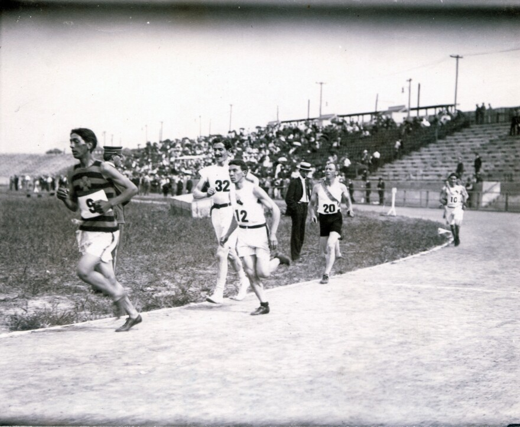

Facts About St. Louis
1. When was the Gateway Arch built? ▼
1965
2. How many World Series have the Cardinals won? ▼
11
3. What Italian-American fried dish was created in St. Louis? ▼
Toasted Ravioli
4. What European country initally controlled St. Louis? ▼
France
5. In what year did St. Louis host the World's Fair and the Olympics? ▼
1904
